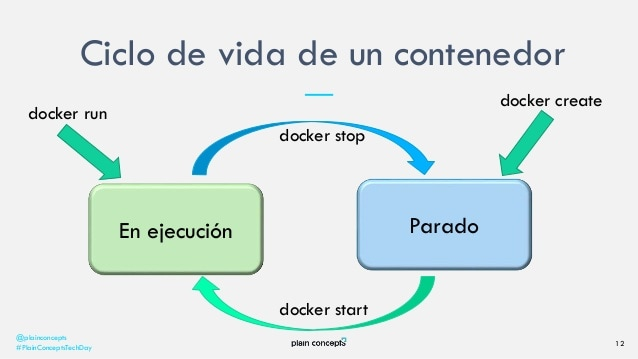

Una intro a Docker

¿Qué es Docker?
Conjunto de heramientas para la creación y ejecución de contenedores
Disclaimer
Los contenedores NO son máquinas virtuales
¿Qué es un contenedor?
Es simplemente aislar un proceso que se ejecuta en el espacio del kernel, por medio de dos características del sistema operativo(*)
(*) Habitualmente los sistemas operativos sin soporte a estas características virtualizan un kernel Linux
entering nerd zone
Namespaces
Es una capa de abstracción que hace que los procesos dentro de un determinado espacio de usuario tengan aislados sus recursos hardware
- PID namespace: Tu proceso puede verse a si mismo y a sus procesos hijos
- Networking namespace: Ejecutar programas en cualquier puerto sin entrar en conflicto con otros procesos usando ese puerto
- Mount namespace: Montar y desmontar sistemas de ficheros sin afectar al sistema de ficheros del anfitrión (host)
CGroups
(control groups)Característica del kernel de Linux que limita y aisla el uso de recursos (CPU, memoria, acceso a disco, red, etc.) a un conjunto de procesos

Conjunto de heramientas para la creación y ejecución de contenedores
Conceptos
- imagen
- contenedor
- CLI
- registro / hub
Imagen
Un empaquetado de los recursos usados por un proceso que se ejecuta en un contenedor
Contenedor
Una instancia de una imagen de un contenedor
Mantiene estado
CLI
La interfaz de línea de comando para trabajar con imagenes y contenedores Docker
docker build [OPTIONS] PATH | URL | -
docker run [OPTIONS] IMAGE [COMMAND] [ARGS]
Registro / hub
Repositorio de imágenes de contenedores
Local y remotos (Docker Hub, Google Container Registry, Amazon ECR, etc.)
Imágenes
Un empaquetado de los recursos usados por un proceso que se ejecuta en un contenedor
Se crean a partir de un descriptor (Dockerfile) en el que se describe su contenido
Dockerfile
FROM alpine:3.14.2
ADD file.txt /
ENTRYPOINT [ "echo", "/file.txt" ]
Una imagen se puede crear partiendo de una imagen previa o from scratch
Construcción de una imagen
docker build [--tag IMAGE_NAME] [--file DOCKER_FILE] .
Por defecto el fichero se llama Dockerfile, pero se puede usar cualquier otro nombre
Gestión de imagenes
Listar las imagenes
docker images
Borrado de una imagen
docker rmi IMAGE_ID
Contenedores
La ejecución de una imagen de un contenedor
Mantienen estado entre ejecuciones
Ciclo de vida
Creación de un contenedor
docker create IMAGE
Creacíón y/o ejecución de un contenedor
docker run IMAGE
docker start CONTAINER [CONTAINER...]
Volumenes y puertos
Un contenedor es un proceso aislado, pero puede:
- montar volumenes del anfitrión
- exponer puertos de
docker run [--publish hostPort:containerPort] \
[--volume [hostPAth:containerPath[:ro]]
Ejemplo: ejecución de dbt
docker run \
--rm \
--publish 8080:8080 \
--volume "$(pwd)/gold:/usr/app" \
--volume $(pwd):/root/.dbt/:ro \
--env-file=env_vars \
fishtownanalytics/dbt:0.21.0 COMANDO_DBT
Gestión de contenedores
Listar los contenedores
docker ps [--all]
Borrado de una imagen
docker rm CONTAINER
Ejemplos
Puedes ver todos los ejemplos en el repositorio de este tutorial (https://github.com/jomoespe/docker-workshop/)
Creación de imagen from scratch
https://github.com/jomoespe/docker-workshop/tree/master/examples/01-minimal-container
FROM scratch
ADD hello-world /
ENTRYPOINT [ "/hello-world" ]
docker build --tag hello-world-minimal .
docker run hello-world-minimal
docker run hello-world-minimal "Data Team"
Creación de imagen desde imagen base
https://github.com/jomoespe/docker-workshop/tree/master/examples/01-minimal-container
FROM alpine:3.14.2
ENTRYPOINT [ "echo", "Hello from Alpine Linux" ]
Ejecución desde Docker Hub
docker run \
--rm \
--publish 8080:8080 \
--volume "$(pwd)/gold:/usr/app" \
--volume $(pwd):/root/.dbt/:ro \
--env-file=env_vars \
fishtownanalytics/dbt:0.21.0 COMANDO_DBT
Ejecutar esta presentación
docker run \
--rm \
--publish 8080:80 \
jomoespe/docker-workshop-presentation
Abrir un navegador y acceder a http://localhost:8080
esta imagen está descargada desde Docker Hub✏️ Recomendaciones
- Usar
--rmsiempre que no se requiera guardar el contenedor - Para evitar efectos secundarios en el filesystem del anfitrión (host) montar los volumenes en modo lectura siempre que sea posible
- Limpieza de contenedores e imagenes
docker [image|container|volume|network] prune [-a]docker system prune [-a] - 💡 Crear alias del SO para comandos dockerizados
🤫 Se quedó fuera
- Ejecutar comandos como demonios 😈 (dettached)
- Publicación de imagenes en registros
- Paso de variables de entorno
- Multistage Dockerfiles (hay un ejemplo)
Tecnologías relacionadas
- Open Container Initiative es una iniciativa para la creación de estandares de formatos de contenedores y runtimes
- ContainerD es un runtime para ejecución de contenedores OCI
- Podman es un daemonless OCI Container engine
¿ Preguntas ?

¡ Gracias !